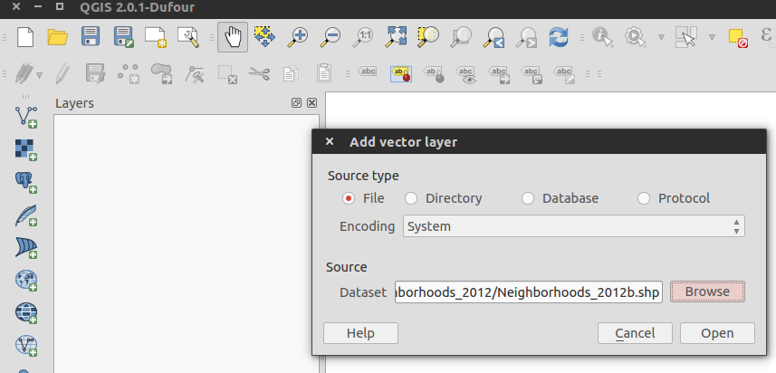
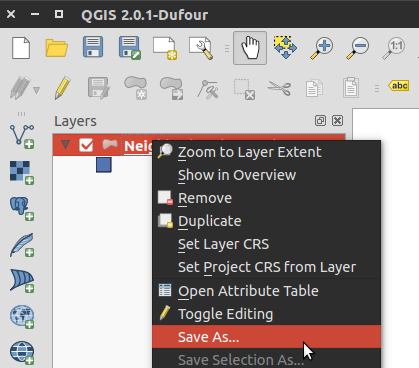
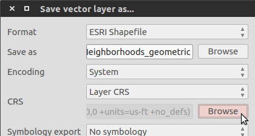
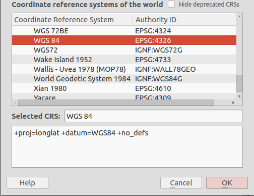

- Sat 06 September 2014
- Python
- Kyler Brown
- #matplotlib, #basemap, #GIS, #shapefile
For this tutorial, I will use a shapefile containing Chicago's neighborhoods, which I would like to display with matplotlib. The data is available from the city of Chicago data portal.
First we will setup a Basemap, which maps data onto map projections.
import matplotlib.pyplot as plt
from mpl_toolkits.basemap import Basemap
m = Basemap(llcrnrlon=-87.906463888372286,
llcrnrlat=41.64846088888256,
urcrnrlon=-87.525897644283177,
urcrnrlat=42.022643093713917,
projection="merc")
I've initialized our object with Chicago's latitude and longitude, and will now attempt to read the neighborhood shapefile.
s = m.readshapefile("Neighborhoods_2012/Neighborhoods_2012b",
"Neighborhoods")
ValueError: shapefile must have lat/lon vertices - it looks like this one has vertices in map projection coordinates. You can convert the shapefile to geographic coordinates using the shpproj utility from the shapelib tools (http://shapelib.maptools.org/shapelib-tools.html)
ERRORS! Perhaps, at this point you can see your shapefile. Lucky you!
It appears this particular shapefile isn't formatted correctly. The error displays a link to a program, shpproj, but after finally getting the program to compile the documentation was too sparse and the errors too cryptic to make any real headway on the problem.
Eventually, I solved the conversion issue using a free GIS program called QGIS. To convert a shapefile to geographic coordinates, first load in the shapefile by clicking Layer>Add Vector Layer... in the menu and then load the shapefile.
Once the shapefile is loaded, you should see the shapes in QGIS. To export in the correct format, right click on the layer name in the Layers section and select Save as....
In the CRS section, select browse.
There is an unbelievable number of geometric CRS formats. After consulting Wikipedia, I choose WGS 84.
Hit OK, give the new shapefile a name and complete the export process. Now try reading the new shapefile:
plt.figure(figsize=(6,6))
s = m.readshapefile("Neighborhoods_geometric","Neighborhoods")
plt.show()
Finally, the shapefile should now be plot-able in matplotlib.